High Tea
€ 30,00 p.p.
Thee of koffie, soep, hartige hapjes en sandwiches, scones met clotted cream en jam, brownies en andere zoete hapjes.
Kinderen tot 12 jaar € 15,50
Walstraat 13, Appeltern · Land van Maas en Waal
In onze gezellige theeschuur en de tuin eromheen is plaats voor ongeveer 60 personen. Kom genieten van ontbijt, High Breakfast, lunch, High Tea of gewoon een taartje of snack.
Geopend van 09.00 tot 17.00
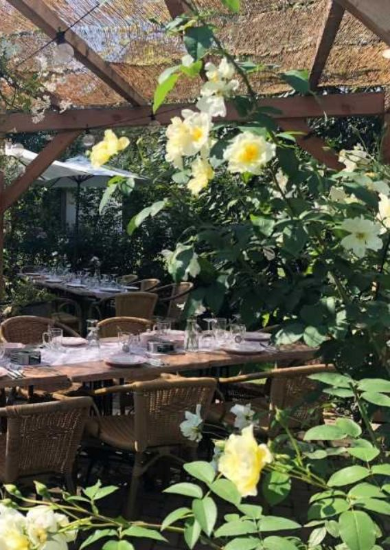
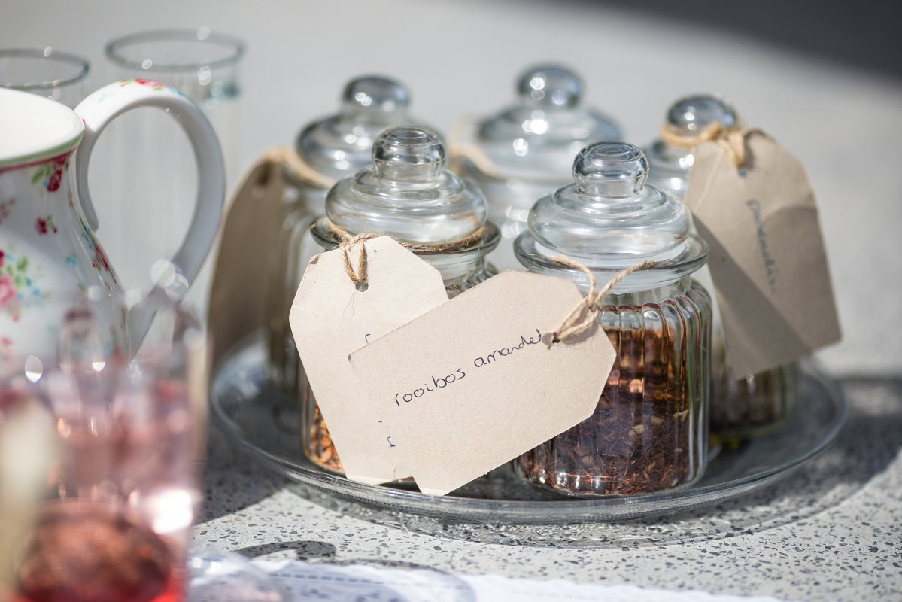
Winterseizoen
1 oktober t/m 31 maart
vrijdag t/m zondag 09.00 – 17.00
Zomerseizoen
1 april tot 1 oktober 2027
woensdag t/m zondag 09.00 – 17.00
Van het eerste kopje koffie tot de laatste scone: zo ziet een openingsdag eruit.
Op onze kaart vol lekkernijen staan minstens 30 theesoorten. Van fruitige en lichte smaken tot zwaardere, gerookte soorten. Koffie serveren wij eveneens in uiteenlopende variaties.
De volledige theekaart ligt op tafel in de theeschuur.
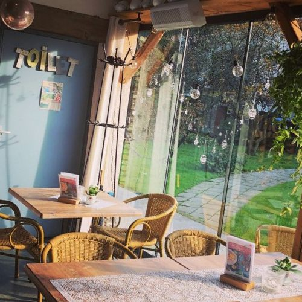
Lunch is tot 16.00 te bestellen. Prijzen in euro’s.
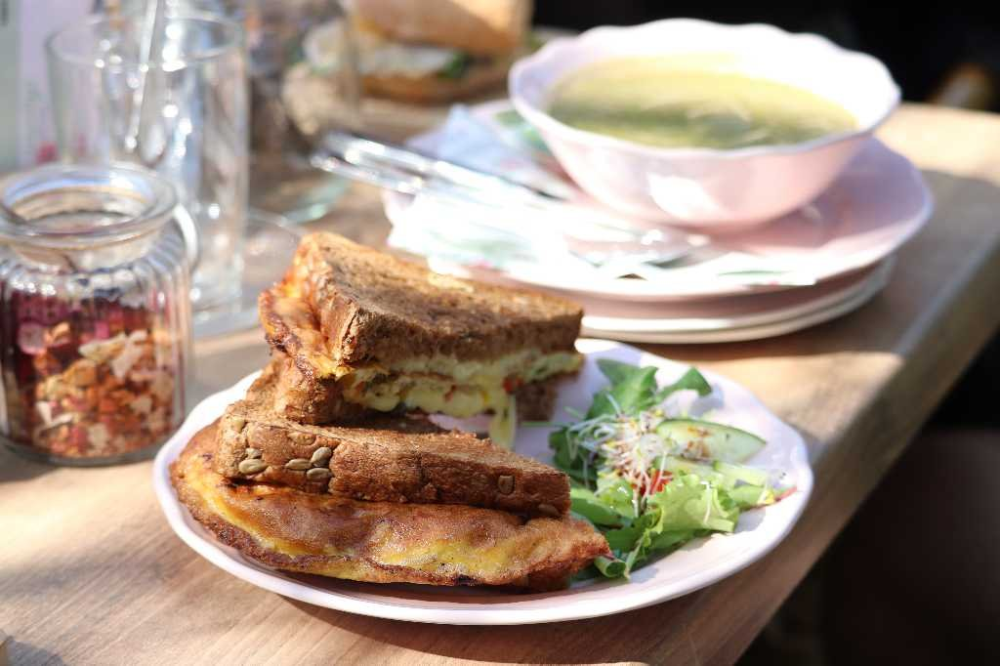
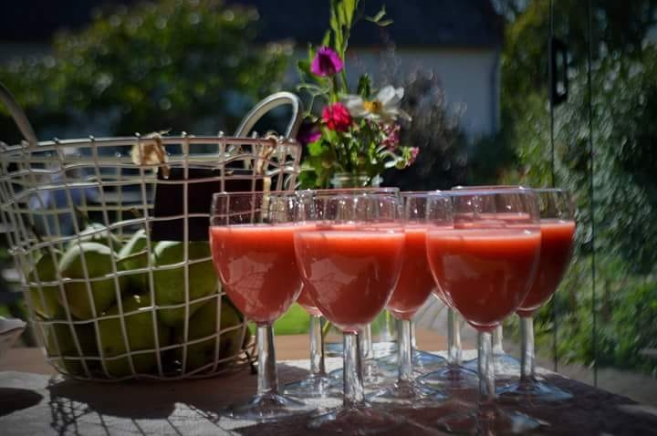
Tussen negen en twaalf uur ontvangen wij u graag voor een High Breakfast. Dit feestelijk ontbijt met een Engels tintje verleidt u met smoothies, muffins met spek, pannenkoekjes, scones en lekker brood.
Te reserveren vanaf twee personen, maximaal 2,5 uur.
Reserveer een High BreakfastHoogtepunt. Dat heerlijke moment op de dag waar de tafel gevuld wordt met thee en hartige en zoete lekkernijen, en er tijd in overvloed is om samen met familie of vriend(inn)en heerlijk bij te praten.
Het is het moment dat de Engelsen ‘afternoon tea’ noemen, maar wij vooral kennen als High Tea. Met uitzondering van de naam volgen wij in de Theetuin welwillend die verrukkelijke Engelse traditie. Wij serveren thee of koffie, soep, diverse hartige hapjes en sandwiches, scones met clotted cream en jam, brownies en andere zoete hapjes. Alles uit eigen keuken natuurlijk. U zult dan ook begrijpen dat wij u vragen een High Tea vooraf te reserveren.
€ 30,00 p.p.
Thee of koffie, soep, hartige hapjes en sandwiches, scones met clotted cream en jam, brownies en andere zoete hapjes.
Kinderen tot 12 jaar € 15,50
€ 35,00 p.p.
Alles van de High Tea, met een glas prosecco bij aanvang en een extra hartig hapje.
Kinderen tot 12 jaar € 18,50
Om zoveel mogelijk mensen de kans te geven te genieten, werken we in 2 zittingen: om 12.00 en om 15.00. De High Tea duurt maximaal 2,5 uur. Graag uiterlijk 1 dag van tevoren reserveren.
Geef dit met je reservering aan ons door. Voor sommige aanpassingen (zoals gluten- en lactosevrije High Teas) vragen wij een extra € 3,50 per High Tea.
Omdat wij de hele High Tea vers voor jullie maken en bakken, vragen wij wijzigingen in aantallen of annuleringen uiterlijk 24 uur vóór de High Tea door te geven. Anders brengen wij de kosten in rekening; u kunt dan kiezen om de hapjes te laten serveren of als take-away in te laten pakken.
Ook meer dan leuk (en lekker!) voor een
Langer of uitgebreider genieten van wat de Theetuin en haar natuurrijke omgeving te bieden hebben? Boek dan een arrangement. Daarin hebben we het beste van de Theetuin, de Bed & Breakfast en Appeltern gecombineerd.
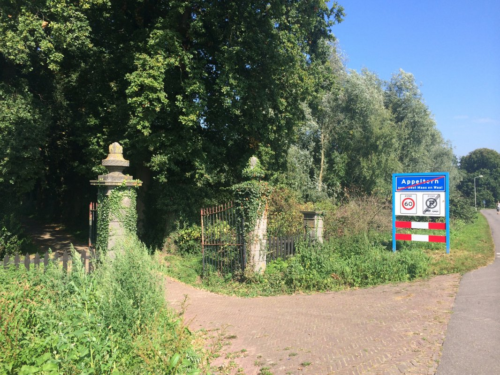
Combineer een leuke tandemtocht door het Land van Maas & Waal met een overheerlijke High Tea bij Theetuin Appeltern. Fietsen, maar dan toch net even anders! Leuk voor ieder gezelschap. Met de uitgebreide High Tea hoeft niemand met honger naar huis.
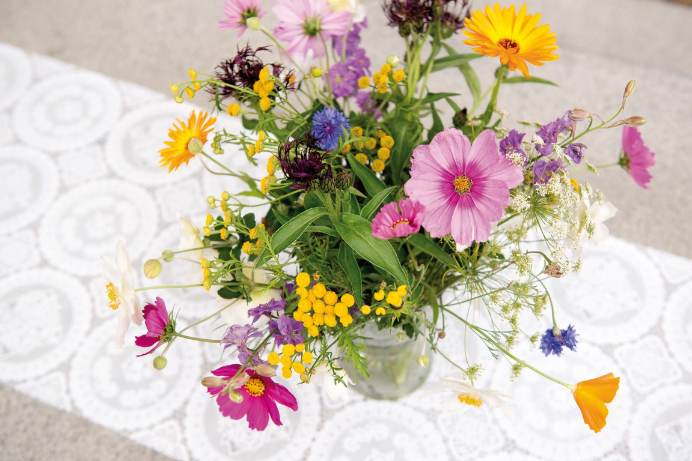
Onbevangen genieten van een schilderworkshop met Tofdesign. Je maakt in ongeveer 3 uur een abstract schilderij op een locatie in Appeltern, dicht bij de Theetuin, met allerlei materialen die je maar kunt bedenken: houtjes, stukjes stof, allerlei soorten verf, plamuurmes en meer.
Liever een andere invulling? Informeer vrijblijvend naar onze overige arrangementen of stel met ons een arrangement op maat samen: info@theetuinappeltern.nl.
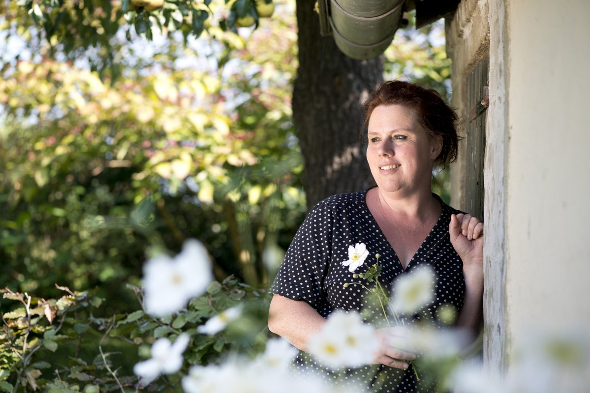
In de zomer van 2014 openden wij de Theetuin, gelegen naast onze Bed & Breakfast. Deze rustgevende plek te midden van rozenstruiken en fruitbomen kenmerkt een nieuwe fase in ons streven om mensen te laten genieten van het prachtige Appeltern.
Toen wij in 2002 onze langgevelboerderij in Appeltern kochten, wisten we nog niet dat een gedeelte ervan ooit dienst zou gaan doen als Bed & Breakfast. Onze gezinssituatie, de ruimte, de omgeving en vooral de wens om gasten te laten delen in deze geweldige plek, vormden de stuwende kracht om de oude en vervallen deel te verbouwen tot een heerlijke verblijfplaats.
Terwijl Derek de noeste arbeid van de bouw op zich nam, worstelde ik me door het woud aan regelgeving voor de benodigde vergunningen. Samen realiseerden wij een absolute aanwinst voor het Land van Maas, dat met de komst van onze Theetuin, Theeschuur en Tuinappartement inmiddels diverse gasten aan zich weet te binden. Voor velen een (h)eerlijk excuus om het jaar rond van onze gastvrijheid en de lekkerste taarten van de regio te komen proeven.
Marsha Krijnen
Bekijk onze Bed & Breakfast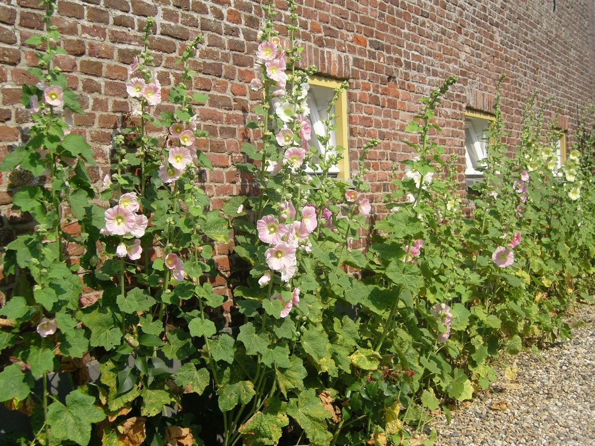
“Het geeft een gevoel van echt een dag vakantie!”
“Koffie, appeltaart en dadeltaart, genieten op het terras: echt onthaasten.”
“We komen zeker terug!”
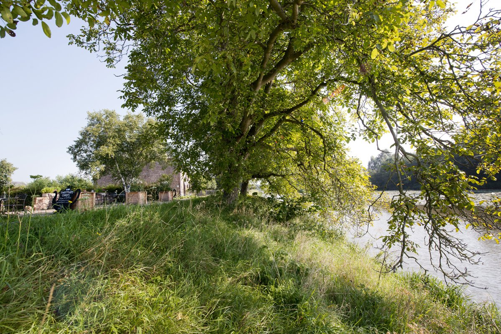
Onze Theetuin ligt in een prachtig stukje Nederland dat zich graag en gemakkelijk te voet of per fiets laat verkennen. Of uw voorkeur nu uitgaat naar stad of land, talloze activiteiten, evenementen en bezienswaardigheden zijn het ontdekken meer dan waard.
Het grootste en mooiste tuinideeënpark van Nederland, op wandelafstand.
Op enkele minuten lopen: het enige bewaard gebleven stoomgemaal in het Gelderse rivierengebied, dat ook in werking te bezoeken is.
Tingieterij waar u aan een excursie kunt deelnemen en de sfeervolle showroom kunt bezoeken.
Direct achter de Waaldijk, waar met liefde voor het vak en aandacht voor de natuur het lekkerste fruit wordt geteeld.
Falk fietskaarten zijn bij ons verkrijgbaar!
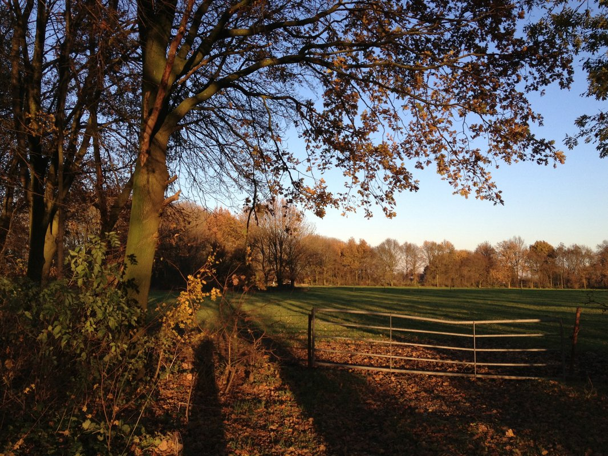
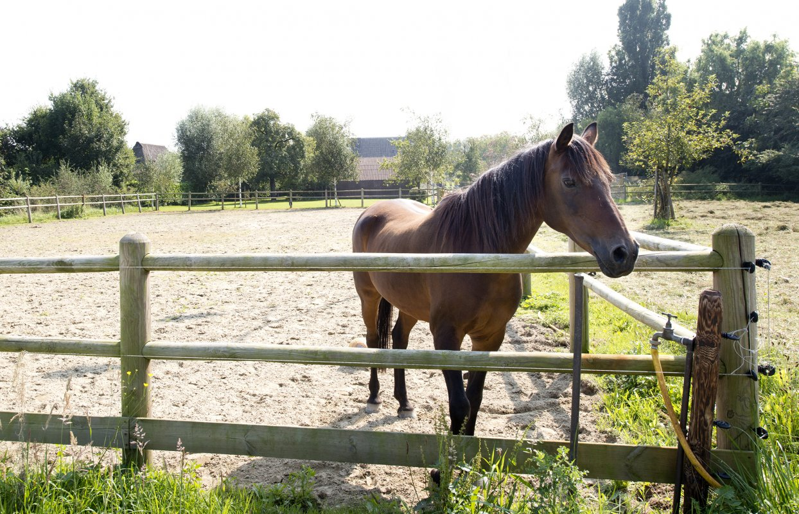
Een High Tea of High Breakfast graag uiterlijk 1 dag van tevoren reserveren. Bel of mail ons, of gebruik het formulier.
Wijzigen of annuleren uiterlijk 24 uur van tevoren.
06-48372041
info@theetuinappeltern.nl
De Theetuin ligt naast Bed & Breakfast Appeltern, in het Land van Maas en Waal. Bloemenpark Appeltern en Stoomgemaal De Tuut liggen op loopafstand.
Neem een kijkje via Google Street View
Winter (1 okt t/m 31 mrt): vr t/m zo 09.00 – 17.00
Zomer (1 apr tot 1 okt 2027): wo t/m zo 09.00 – 17.00